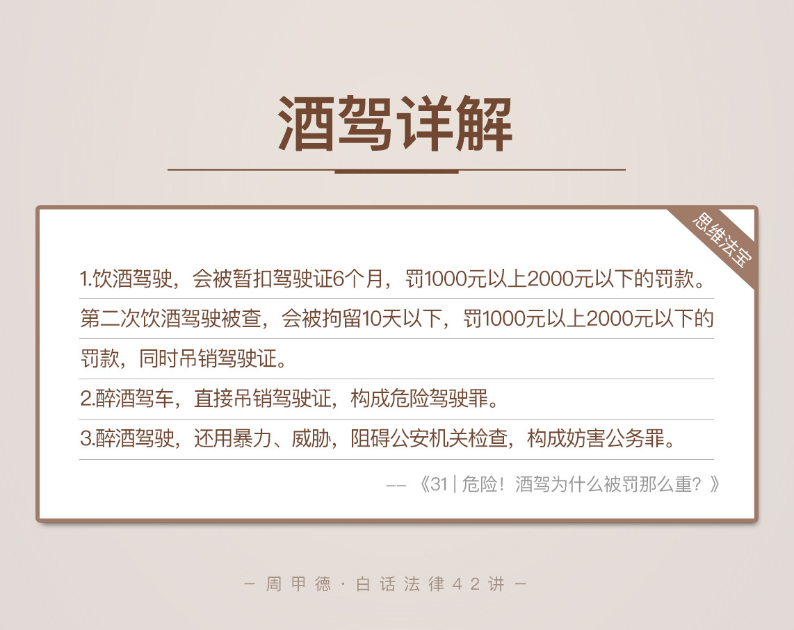

- 00 开篇词 这年头，你真应该懂点法律常识.md.html
- 01 “老周，我想知道” 常见法律认知盲区（一）.md.html
- 02 “老周，我想知道” 律师就在你身边（二）.md.html
- 03 “老周，我想知道” 律师就在你身边（三）.md.html
- 04 “老周，我想知道” 律师就在你身边（四）.md.html
- 05 创业未捷老板跑，社保工资哪里讨？.md.html
- 06 保密还是“卖身”，霸王条款怎么看？.md.html
- 07 编造流言蹭热度？看守所里降温度！.md.html
- 08 合同在手欠款难收，报警有用吗？.md.html
- 09 致创业：谁动了我的股权？.md.html
- 10 又见猝死！工“殇”究竟是不是工伤？.md.html
- 11 期权的“前世今生”.md.html
- 12 裁员面前，你能做的还有什么？.md.html
- 13 抄袭、盗图为什么做不得？.md.html
- 14 加班、工资、休假，你知道多少？.md.html
- 15 受贿原来这么“容易”.md.html
- 16 今天你用“VPN”了吗？.md.html
- 17 漏洞在眼前，可以悄悄破解吗？.md.html
- 18 “爬虫”真的合法吗？.md.html
- 19 非法集资到底是个啥？.md.html
- 20 黄色网站？不仅仅是“黄色”罪名.md.html
- 21 谁修改了我的积分资产？.md.html
- 22 外挂真能大吉大利吗？.md.html
- 23 如何看待“从删库到跑路”？.md.html
- 24 “伪基站”是你的避风港吗？.md.html
- 25 “网络诈骗”真的离你很远吗？.md.html
- 26 智斗中介：“北上广”租房图鉴.md.html
- 27 买买买！买房的“避坑”指南.md.html
- 28 闪婚又闪离，彩礼怎么理？.md.html
- 29 离婚还想和平？你要这么做.md.html
- 30 遗产继承的爱恨情仇.md.html
- 31 骗术升级？假结婚、假离婚的那些事儿.md.html
- 32 孩子学校受伤，谁之过？.md.html
- 33 如何让欠债还钱真正“天经地义”？.md.html
- 34 从透支到盗刷：人人须知的银行卡纠纷.md.html
- 35 远离“套路贷”的套路大全.md.html
- 36 危险！酒驾为什么被罚那么重？.md.html
- 37 老人倒地，“扶”“不服”？.md.html
- 38 “能动手就别吵吵”，代价你真的知道吗？.md.html
- 39 发生交通事故，如何处理？.md.html
- 40 交通事故综合法宝.md.html
- 41 婚姻家庭综合法宝.md.html
- 42 买卖房屋综合法宝.md.html
- 一键直达 法律专栏“食用”指南.md.html
- 加餐 “新冠肺炎”影响下，17个常见法律问题解答.md.html
- 结束语 法律，不会终止的篇章.md.html
- 捐赠
36 危险！酒驾为什么被罚那么重？
元旦出门办事时，朋友大宝正好同路，所以我就坐了趟真正的“顺风车”。正系安全带时，我突然看到前面的手扣里，放了一瓶二锅头。还没等问出口，大宝就一脸炫耀地告诉我，放这瓶酒的目的是为了防止酒驾被抓。
我非常惊讶，这是哪来的歪理？大宝说出了他所谓的办法，如果酒后开车被警察查住了，那就立刻拿着这瓶“救命酒”下车，然后当着警察的面把酒给喝了。这样，警察就不能认定刚刚他是酒后开车了。
听完大宝的说法，我差点没直接动手抽他。这是对法律有多大的误会啊，才会觉得“救命酒”能钻得了法律的空子。我估计不少人都听过这样的法子，甚至有人实践。
事实上，如果你酒驾被查住后，当着警察的面喝酒，真的能躲过处罚吗？如果不能，又会怎样呢？
我们需要先来了解最基本的几个法律知识。
法律知识
2011年的5月1日，对很多酗酒分子并不那么友好。因为《刑法》再一次修正了，因为醉酒驾车正式入刑了。
从那一天起，《中华人民共和国刑法修正案(八)》正式实施，其中规定，在道路上醉酒驾驶机动车的，处拘役，并处罚金。从此，全国开始加大对饮酒驾驶机动车的打击力度。
这里我要区分一下，刚刚提到的两个词，饮酒驾车和醉酒驾车。都是酒后驾车，而法律上对这两者的区分，主要在于血液中的酒精含量。
饮酒驾车，是指你开车时，血液中的酒精含量大于或等于20mg/100ml，但是小于80mg/100ml。
醉酒驾车，是指你开车时，血液中的酒精含量大于或者等于80mg/100ml。
明白了这两者的区别，接下来我们来看酒驾相对应的罪名，危险驾驶罪。
危险驾驶罪，是指在道路上驾驶机动车的这么几种行为。
追逐竞驶（比如飙车），并且情节恶劣的行为；
醉酒驾车的行为；
校车或者客车，严重超载或者严重超速的行为；
运输危险化学品，危害公共安全的行为。
关于这个罪名，生活中最常见的犯罪行为，其实就是醉酒驾驶和追逐竞驶。很多追逐竞驶的例子，往往也是因为喝了酒。
也就是说，只要你喝了酒又去开车，被查到体内血液的酒精含量大于或等于80mg/100ml，就构成了危险驾驶罪，会被判处拘役。
现实生活中，醉酒驾驶被抓后，一般走“快审快结”程序，大概三个月的时间，就能从侦查开始，到审判结案。同时，要注意的是，酒驾被抓基本不能被取保候审。
情景分析
现在再来看大宝的所谓攻略，真得承认就是个昏招。真要那么做了，他可能遇到这么几种情况。
第一种，大宝本身喝了酒，但是血液中的酒精含量低于20mg/100ml，那就不属于法律上的饮酒驾车，遇到警察也不会被处罚。
但是，在他当着警察的面喝完二锅头后，情况就不一样了。警察将会按喝完后的情况来判定，也就是说，很有可能这时的血液中酒精含量超标，那进看守所这事儿基本没得跑了，危险驾驶罪在等着他。
第二种，大宝本身喝了酒，血液中的酒精含量大于或等于20mg/100ml，小于80mg/100ml，那就属于法律上的饮酒驾车，会被警察暂扣六个月的驾驶证，驾驶证上也会被记12分。同时他会被罚款1000元到2000元。
同样，如果他当着警察的面再喝酒，跟上面情况一样，等于板上钉钉进看守所。
第三种，大宝本身喝了酒，并且血液中的酒精含量大于80mg/100ml，那他会直接构成危险驾驶罪，被判六个月以下的拘役，驾驶证也会被吊销。
不要以为这就是最严重的情况，所以觉得再当着警察面喝酒也没啥影响。事实上，如果这时候他再喝一瓶二锅头，血液中的酒精含量肯定还会继续增加，一旦超过200mg/100ml，面临的就是危险驾驶罪从重处罚的结果了。
这么分析完，你应该可以理解，我为什么会说这是昏招，并且想打人了吧。我还用“酒驾防查攻略”等关键词，专门上网搜了一下，发现一个心寒的事实——这些攻略基本上都是落井下石的，照做只会加重罪名。
看了那么一堆攻略，我也总结了一个万能防被查攻略——喝酒不开车，开车不喝酒。
不要笑话这句话，觉得我说的是废话。事实上，酒驾造成的事故，每个人心里都很清楚。开车不应该喝酒，喝酒不能开车，每个人也都认可。但为什么还是会有人酒后开车呢？
还是侥幸心理。你可能因为这样、那样的原因推脱不了喝酒一事儿，但是酒后开车，一定没人逼你，还是你心存侥幸了。你可能觉得，喝这么点酒再开车完全没问题，或是根据以往经验，认为压根儿不会遇到查车的。
但是，生活总是遵循墨菲定律，所希望的总是事与愿违。不喝酒不查车，只要喝酒就被查，看起来总是这么“倒霉”，事实上，喝酒被查，才是对生命的负责，对家庭的负责，对世界上的路人甲、乙、丙、丁负责。
思维法宝
我们来总结一下酒驾的内容。

第一，饮酒驾驶，会被暂扣6个月的驾驶证，并交1000元以上2000元以下的罚款。第二次饮酒驾驶被查的话，会被拘留10天以下，交1000元以上2000元以下的罚款，同时吊销驾驶证。
第二，醉酒驾车，直接就会吊销驾驶证，构成危险驾驶罪，追究相关的刑事责任，并被拘役。
在这里要注意了，一旦被追究刑事责任，也就是说你犯了罪，公职人员会被开除公职。哪怕你是普通公司的员工，也会面临丢饭碗儿的问题。因为这种情况下，公司可以依法跟你解除劳动关系。
第三，醉酒驾驶，同时还用暴力、威胁等阻碍公安机关检查的，又会构成妨害公务罪，两罪并罚，后果自然是雪上加霜。
酒驾就是这么一个，容易被忽视，但其实很严重的问题，一不小心就是犯罪，一不小心更是人命关天的大事。现在的代驾也比较发达，装个软件找代驾，或者叫家人来接，都不是大问题。还是那句话，喝酒不开车，开车不喝酒。
最后，我给你留下一道思考题，这个例子是一种常见的所谓攻略，其实也是一个真实的案件。
小宝喝完酒后，开车回家的路上，遇到警察检查。在他对着酒精测试仪吹了一下后，发现已经达到了醉驾标准。警察要求小宝出示驾驶证、行驶证，并且下车接受检查。结果，小宝在把驾驶证，行驶证递给警察的同时，拔腿就跑，最后成功逃脱了。
请问，小宝这样做安全了吗？可以逃过刑事责任了吗？如果不能，会有怎样的后果呢？
今天的内容就是这些。欢迎留言和我分享，写下你的困惑和答案，也欢迎你把这篇文章，转发给你的亲人、朋友。醉酒可怕，酒驾更令人害怕。
© 2019 - 2023 Liangliang Lee. Powered by gin and hexo-theme-book.